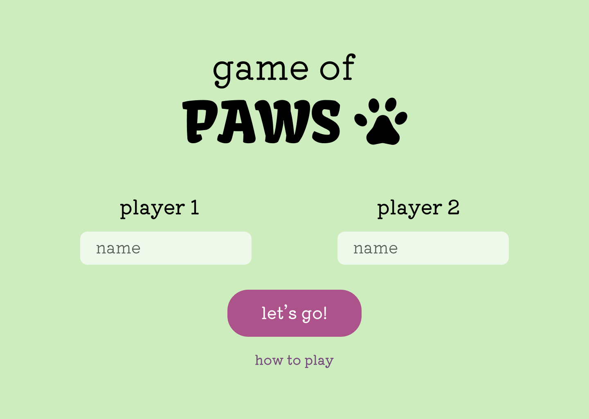
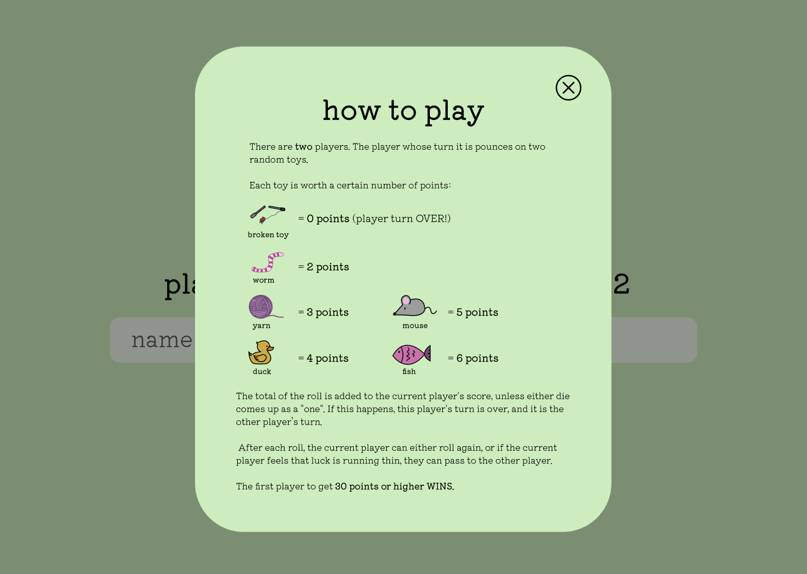
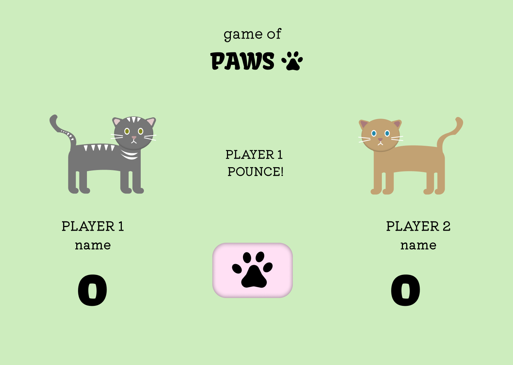
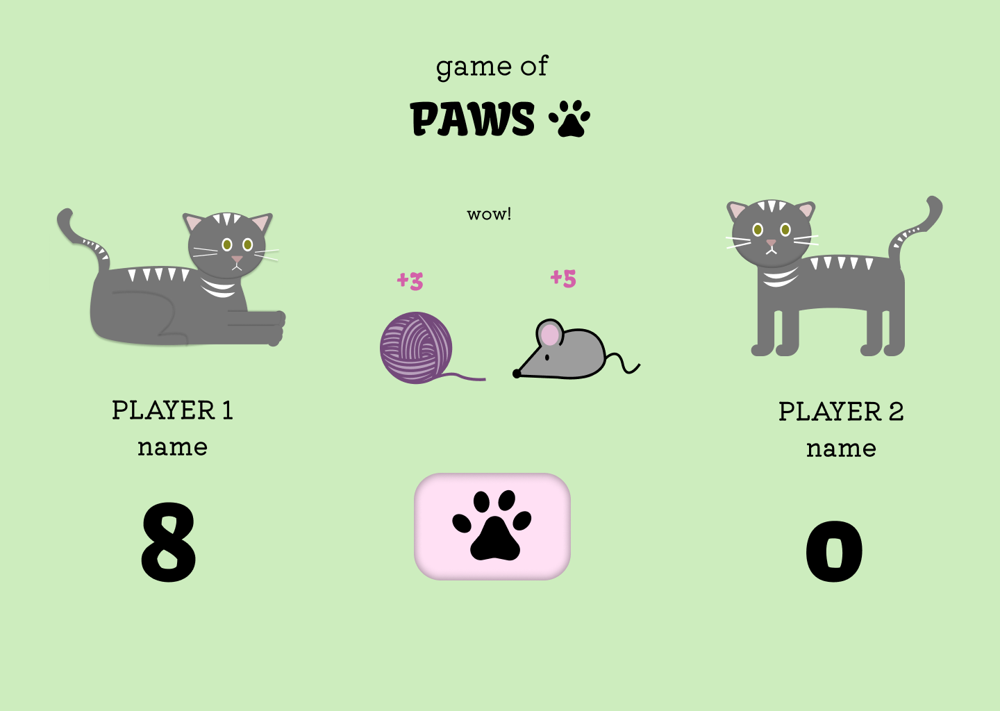
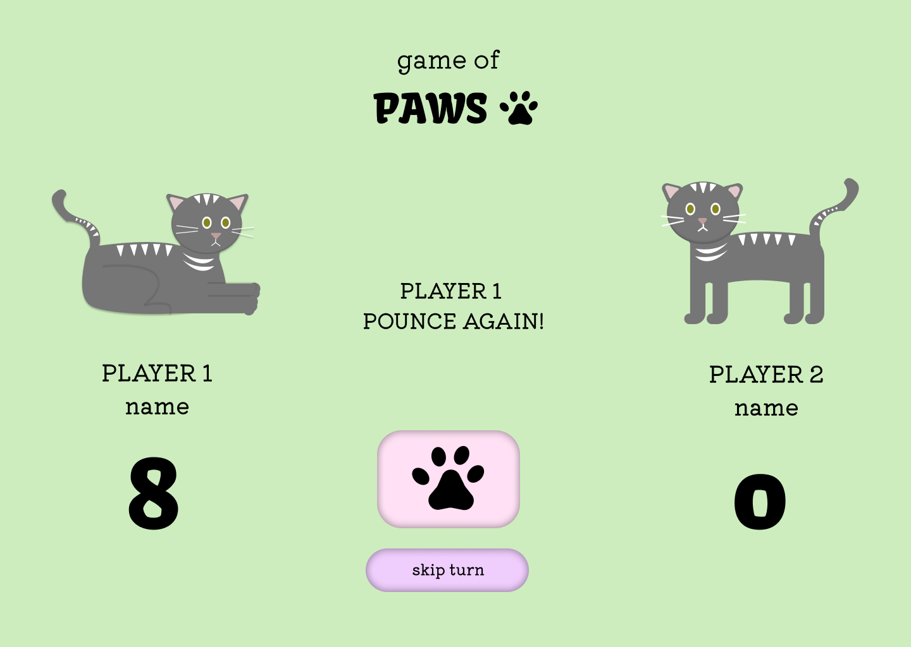

Updated Design Comps




With my new and improved visual designs, I wanted to make the overall experience clearer, more intuitive, and easier for players to understand at first glance. Based on my feedback, I started adding more visual hierarchy and designing clearer indicators for turns and actions, my goal was to guide the user’s attention naturally without overwhelming them. I also worked details that give users feedback to help the players connect what they see with what’s happening in the game. These design changes allowed the interface to communicate more effectively, and hoepfully will reduce a lot of confusion to make the game feel more thoughtful and user-friendly. Ultimately, I changed my designs to create a more interesting but intuitive experience that supports the gameplay instead of distracting from it.